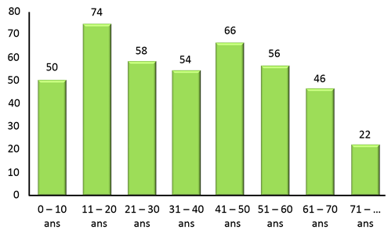

La démographie
 Soit un total de 426 habitants. Chiffre valable à la création du site en 2016.Nous pouvons découvrir la tranche d'âge à laquelle nous appartenons et qu'il y a un réel potentiel de liens à tisser entre personnes ayant ce point en commun.
C'est déjà un bon début, le reste viendra au fur et à mesure de nos rencontres. Allez ! Lancez-vous !